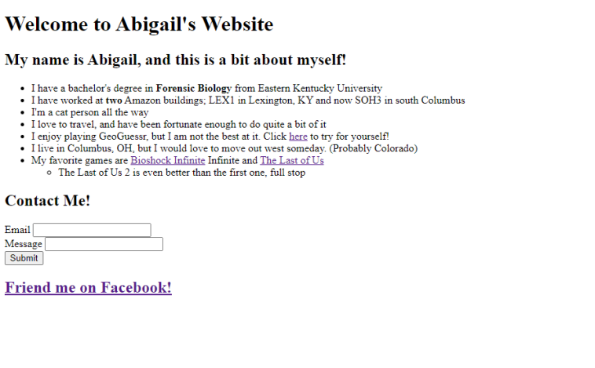
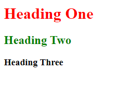
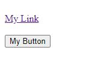
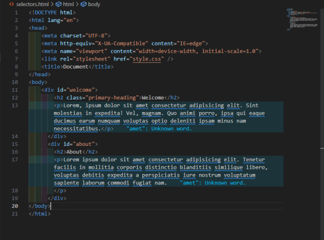
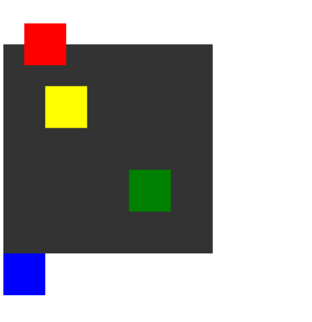

Projects
Project 1: HTML Practice
This project was a simple practice project using basic HTML to create a webpage, combining some various new things learned, such as how to make a form and how to make an unorganized list.
To create this project, I used HTML on Visual Studio Code, which I then published to GitHub.
Project 2: Practice with CSS and HTML
This project was very basic project with many objectives, including how to style things using CSS within the HTML code, rather than creating a separate stylesheet, how to make a button, and how to put selectors in HTML code to use in a CSS stylesheet.
  To create these mini-projects, I used Visual Studio Code, using a mixture of HTML and CSS. I then published this project to GitHub.
Project 3: CSS Layouts
This project was done in order to practice using a CSS stylesheet to style an HTML webpage. This provided practice with design as well as practice using class and ID selectors.
To create this project, I used Visual Studio Code with a mixture of HTML and a CSS stylesheet. The CSS practice included changing the color of things, as well as the relative positions of various things on the screen.